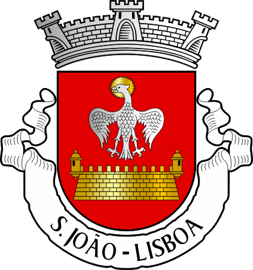
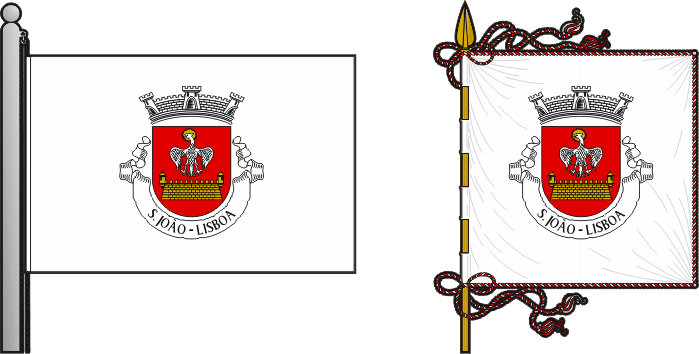

Enquadramento do meu bairro
A Quinta da Curraleira situava-se na antiga freguesia de São João, em Lisboa, inserida numa das encostas do Vale de Chelas, entre a Picheleira, o Cemitério do Alto de São João, a Penha de França e o Alto do Pina. Era um dos maiores e mais antigos bairros de barracas da cidade, composto por habitações precárias erguidas em madeira, zinco e alvenaria, sem acesso a redes de saneamento básico, água e eletricidade.
Algumas tradições
As festas de São João em Lisboa eram marcadas por marchas populares, sardinhadas, fogueiras e danças tradicionais. As marchas, com trajes coloridos e músicas animadas, percorriam as ruas, promovendo o espírito comunitário e celebrando a identidade dos bairros. Estas festividades eram uma expressão viva das tradições culturais da cidade.


Símbolos da Freguesia
- Armas- Escudo de vermelho, águia de prata com cabeça nimbada de ouro; em campanha, pano de muralha " Vauban", de ouro, lavrado de negro, com guaritas nas duas extremidades. Coroa mural de prata de três torres. Listel branco, com a legenda em maiúsculas a negro: “ S. JOÃO - LISBOA “.
Simbologia
- A águia- Símbolo de São João Evangelista - Orago da freguesia.
- O pano de muralha- Representa os vestígios do forte (baluarte) de Santa Apolónia, O forte terá sido uma estrutura defensiva de planta pentagonal, edificada entre 1652/1668. Em época indeterminada, a perda de função fez com que o antigo forte fosse integrado nos terrenos da quinta do Manique, que pertenceu ao Visconde de Manique - que lhe acrescentou dois portões seiscentistas em cantaria - e depois aos Condes de São Vicente. Em 1945, os restos do forte de Santa Apolónia eram propriedade da firma George & H. Hall, Lda.
- Bandeira- De branco. Cordão e borlas de prata e vermelho. Haste e lança de ouro.
Enquadramento Histórico
O território de São João apresenta ocupação desde a época medieval, testemunhada em referências toponímicas ainda atuais, como a Cruz da Pedra e o Alto do Varejão.
Em Xabregas erguiam-se os Paços Reais, mandados construir por D. Afonso III, que viriam a ser incendiados pelos Castelhanos em 1373, durante as Guerras Fernandinas.
A partir da segunda metade do século XIX, a freguesia ganhou importância industrial, com o surgimento de fábricas nos vales de Chelas e Xabregas.
Outro marco relevante é a criação do Cemitério do Alto de São João, implantado na Quinta dos Apóstolos. Inaugurado em 1833, é o primeiro cemitério municipal de Lisboa e o maior de Portugal, sendo considerado um dos principais exemplos de arquitetura funerária nacional.
O património edificado da freguesia é vasto e inclui:
- O Convento de Santos-o-Novo;
- O Forte de Santa Apolónia ou Baliarte de Santa Apolónia;
- O Museu Nacionaldo azulejo;
- O Cemitério do Alto de São Jõao;
- A Igreja/Mosteiro da Madre de Deus;
- O Palácio dos Marqueses de Niza.
População
A freguesia de São João integrava o 4.º Bairro da cidade de Lisboa.
Evolução da população residente:
| Ano | Habitantes |
| 1960 | 32 466 |
| 1970 | 27 744 |
| 1981 | 24 889 |
| 1991 | 21 960 |
| 2001 | 17 073 |
| 2011 | 15 187 |